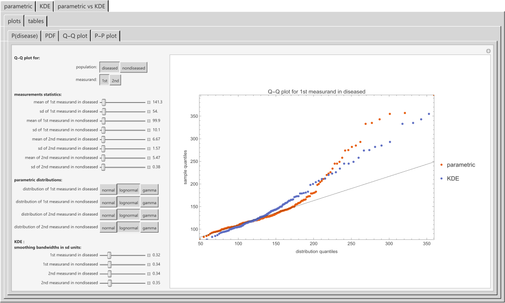

HCSL Software Repository
Bayesian Diagnosis
Chatzimichail T, Hatjimihail AT. Bayesian Diagnosis: A Bayesian Inference Based Computational Tool for Parametric and Nonparametric Medical Diagnosis. Ver. 1.0.6.4. Hellenic Complex Systems Laboratory; 2024
Software Synopsis
This software tool employs Bayesian inference to calculate the posterior probability of a disease medical diagnosis. It comprises three distinct modules designed to allow users to define and compare parametric and nonparametric distributions. The tool is designed to analyze datasets generated from two separate diagnostic tests performed on diseased and nondiseased populations.
Datasets
The provided datasets, d1 (Fasting Plasma Glucose [mg/d]) in diabetics 40-60 years old), d2 (Glucated Hemoglobin A1c [%] in diabetics 40-60 years old), nd1 (Fasting Plasma Glucose [mg/dl] in nondiabetics 40-60 years old), and nd2 (Glucated Hemoglobin A1c [%] in nondiabetics 40-60 years old), were obtained from the database of the National Health and Nutrition Examination Survey (NHANES), Centers for Disease Control and Prevention, USA. They can be replaced by other datasets of two mesurands in diseased and nondiseased.
Snapshot

Source (Revised on 21/07/2024)
Software Requirements
Operating systems: Microsoft Windows, Linux, Apple macOS and iOS
Programming language: Wolfram Language
Source file format: Wolfram Notebook
Other software requirements: Wolfram Player (freely available) or Wolfram Mathematica
Recommended system: Intel Core i9 or equivalent CPU and 32GB+ of RAM
Project Status
Active
Terms of Use
The material made freely available by Hellenic Complex Systems Laboratory is subject to its Terms of Use.